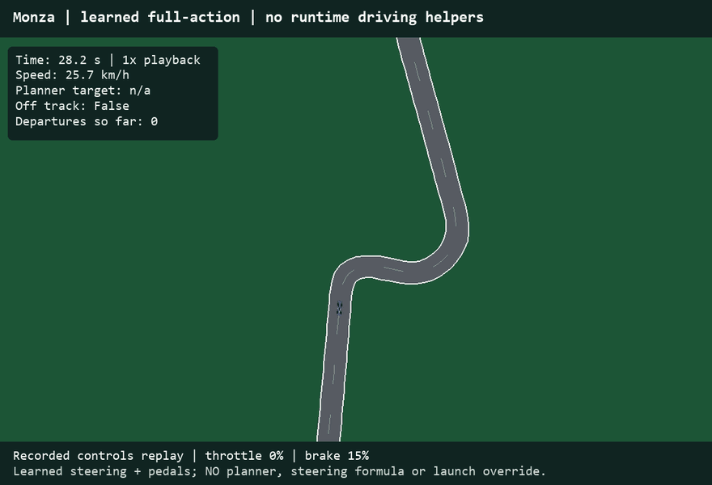

1. Without speed assistance

Original learned pedals; rule-based steering and pedal cleanup remain.
Monza: 91.8 sINVALID - 13 departures
Silverstone: not tested
2. With assistance

Original learned pedals plus a rule-based speed planner and steering.
Monza: 205.4 sVALID - 0 departures
Silverstone: 256.5 sVALID - 0 departures
3. AI-learned steering + pedals

Expert imitation. No runtime speed planner, steering formula, launch rule or teacher fallback.
Monza: 209.1 sVALID - 0 departures
Silverstone: 266.3 sVALID - 0 departures